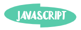
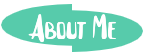

|  |  |

|
|---|
Final Project
This page displays my final project for CSC106. The tools that helped me create them come from Khan Academy. Our program is a childrens interactive story about ice cream.
beet & Nguyen Final
Made using: Khan Academy Computer Science